ECON 2316 • Microeconomic Theory • Chapter 12
Pricing with Market Power
Chapter 11 found the one price a monopolist should charge. So why does Spotify charge five? This chapter is the toolkit for charging different buyers different prices — and capturing the surplus a single price leaves on the table.
Dr. Richeng Piao
Department of Economics
Northeastern University — 100 min
Learning Objectives
By the end of class today, you will be able to…
12.1
Distinguish first-, second-, and third-degree price discrimination by what the firm must know. (Bloom L2)
12.2
Solve a third-degree problem with the per-segment inverse-elasticity rule \(L_i = -1/\varepsilon_{D,i}\). (Bloom L4 — central result)
12.3
Design a two-part tariff and derive the optimal fixed fee \(F^{\ast} = CS(MC)\). (Bloom L3)
12.4
Analyze bundling and explain when it pays via the Adams-Yellen correlation test. (Bloom L4)
12.5
Apply pricing-with-market-power tools to two-sided platforms and cross-side network effects. (Bloom L5)
From One Price to Many
Ch 11 — single price
- One price for all buyers: \(MR = MC\)
- Markup \(L = (P-MC)/P = -1/\varepsilon_D\)
- Captures only the rectangle below \(P_M\)
- Leaves consumer surplus and deadweight loss on the table
Ch 12 — many prices
- Different prices to different buyers
- Six tools: 1st / 2nd / 3rd-degree, two-part tariffs, bundling, platforms
- Converts that left-behind CS into producer surplus
- DWL almost always falls — sometimes to zero
One assumption relaxes. Chapter 11 forced the monopolist to post a single price. Drop that — let the firm separate buyers it can tell apart, or get them to sort themselves — and the surplus a uniform price couldn't reach becomes capturable. The common goal of all six tools: convert consumer surplus into producer surplus. The welfare effect on consumers is ambiguous; the effect on the firm's profit never is.
Same Coffee, Two Prices — Third-Degree by Location
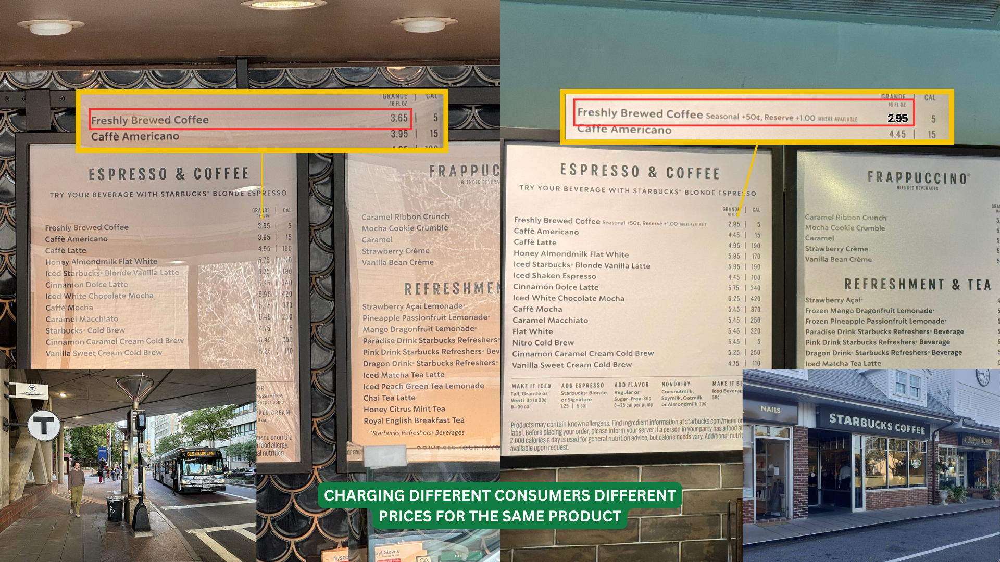
Why Does Spotify Charge Five Different Prices?
On any day in early 2026, Spotify offered five US prices for the same music library — Student, Individual, Duo, Family, and a standalone Audiobooks tier. Same firm, same songs, five separate price decisions.
Chapter 11 explained why one price is \(\$11.99\): the firm sets \(MR = MC\), implying \(L = -1/\varepsilon_D = 0.30\). It did not explain why there are five.
A monopolist with one price leaves money on the table. The fix is to separate the segments — students by SheerID, households by same-address check — and charge each what it will bear. That is price discrimination.
\$5.99
Premium Student (with Hulu)
\$11.99
Premium Individual
\$16.99
Duo (2 accounts)
\$19.99
Family (up to 6)
Plus a standalone Audiobooks Access tier at \$9.99/mo. On Jan 15, 2026 Spotify reset the whole ladder upward (Individual \$11.99 → \$12.99) — we return to that as live data in Theory and Data 12.1.
The Basics of Pricing Strategy
Which pricing tool a firm can use ultimately depends on the information it has about its customers.
1 · Knows demand before the sale
- Direct PD — price by observable customer traits.
- Knows each buyer's whole demand curve → first-degree (perfect).
- Less detail → segment by group → third-degree.
2 · Learns demand only after the sale
- Indirect / second-degree — offer a menu, buyers self-select.
- Bundle products into a package.
- Block pricing & two-part tariffs.
3 · Customers share the same demand
- Still profitable: block pricing and two-part tariffs capture extra surplus.
More information → finer discrimination. Full info reaches first-degree; a group label gives third-degree; no way to tell buyers apart falls back on menus, bundles, and two-part tariffs. The rest of the chapter works through each tool.
Pigou's Three Degrees — Ordered by What the Firm Must Know
Arthur Cecil Pigou, The Economics of Welfare (1920). Still the working taxonomy a century later.
First-degree (perfect)
Charge each buyer their exact reservation price. Captures all CS; output equals competitive. Needs: know every buyer's WTP.
Second-degree (menu)
Offer a menu; buyers self-select. The firm can't see types but designs choices so types reveal themselves. Needs: know the distribution.
Third-degree (group)
Segment by an observable label (student, weekend) and apply the Ch 11 rule per group: \(L_i = -1/\varepsilon_{D,i}\). Needs: observe a label that correlates with WTP.
Descending informational demand: know each buyer → know the distribution → observe a group label. Each degree extracts less than the one above but is more achievable. Real firms mix all three — Spotify uses group labels (Student), a menu (Audiobooks vs Premium), and edges toward personalization.
The Catch: No Arbitrage
Every PD scheme must block arbitrage — resale from the low-price segment to the high-price one. If a student bought at \$5.99 and resold to a non-student at \$10, the Student tier collapses.
Spotify: SheerID + same-address checks
Airlines: non-transferable named tickets
Pharma: serialization + 340B audit regime
Theme parks: date-stamped, ID/biometric entry
Heads Up 12.1 — PD needs market power and no arbitrage
Not every price difference is price discrimination. PD requires (a) market power (so \(P > MC\) is sustainable) and (b) no arbitrage between segments.
Two competitive sellers at different prices is price dispersion (search costs), not PD. And a monopolist who cannot stop resale is forced back to a single price — however different its buyers' WTPs.
Without an anti-arbitrage mechanism, PD collapses into a single price. The verification technology — ID checks, contracts, DRM, geography — is what makes the whole chapter possible.
§12.2
First-Degree (Perfect) PD
The upper bound: capture every dollar, restore efficiency — \(Q_{PD} = Q_C\), \(CS = 0\)
First-Degree — Each Buyer’s Exact Willingness to Pay
The firm captures every dollar of consumer surplus. Nearly impossible — but the data economy is closing the gap.
Amazon, 2000. Caught charging different DVD prices by browsing history. Backlash was instant; Bezos called it a “random discount” and refunded. Lesson: overt personalized pricing enrages people.
Delta, 2025. AI-driven personalized fares with startup Fetcherr — from 1% of domestic seats toward 20% by year-end. An algorithm that may know your willingness to pay better than you do.
Framing: a “coupon for you” feels like a gift; a “surcharge for you” feels like theft — though the economics is identical. Firms learned to frame PD as discounts for some, never surcharges for others.
It’s direct PD — with complete information about customers, the firm charges each buyer exactly their willingness to pay. So what happens to consumer surplus? Under perfect PD it is driven to zero: every dollar of surplus is converted into producer surplus.
First-Degree in Action — the Silver-Coin Auction
With more coins to sell, the seller can message the 5 losing bidders and charge each the maximum price they were willing to pay — exactly what an online auction reveals.
Press → — each bid (right) maps to one slice of producer surplus (left).


First-Degree in the Wild — the Car Lot
The car dealership is everyday first-degree PD: the salesperson sizes up each buyer — budget, urgency, trade-in — and negotiates toward your personal maximum.
No two buyers on the lot pay the same price for the same car.
Car Dealerships — Three Buyers, Private Values

WTP=$12,000
WTP=$20,000
WTP=$25,000
Traditional Monopoly: Price = $25,000
QM = 1
MC = $12,000
Profit = $13,000
WTP=$12,000
WTP=$20,000
WTP=$25,000
Traditional Monopoly: Price = $20,000
QM = 2
MC = $12,000
Profit = $16,000
WTP=$12,000
WTP=$20,000
WTP=$25,000
Price Discrimination — Charge Each Buyer Their WTP

MC = $12,000
Profit = $13K + $8K + $0 = $21,000

WTP=$12,000
WTP=$20,000
WTP=$25,000
An Attempt at First-Degree PD — Amazon, 2000
Could a seller read each shopper’s willingness to pay online — and quietly charge each a different price? In September 2000, Amazon tried.
Shoppers who deleted their cookies (so Amazon no longer recognized them as regulars) saw lower prices. One customer watched a DVD fall from $26.24 → $22.74.
That’s textbook first-degree PD: a personalized price aimed at each buyer’s own WTP.
The Aftermath
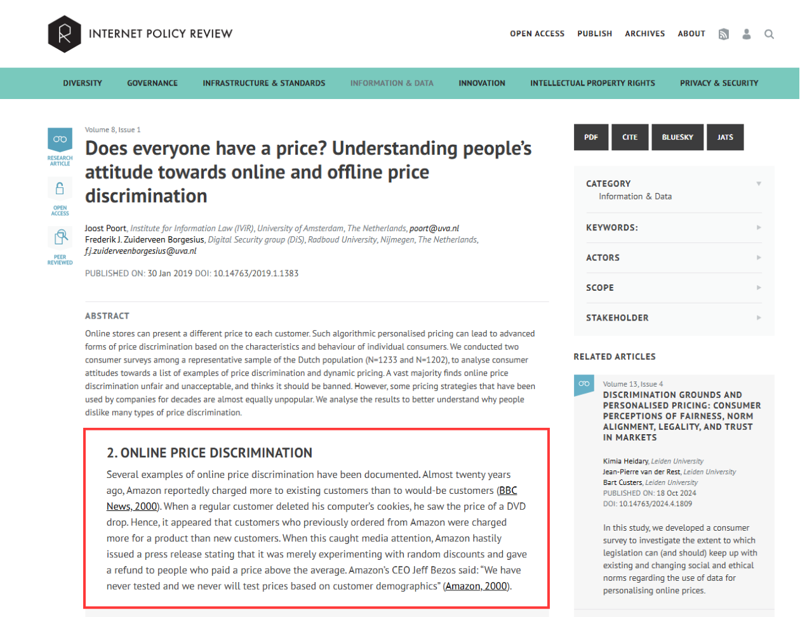
The backlash was immediate — customers felt cheated, and the story made national news.
“We have never tested and we never will test prices based on customer demographics.”
— Jeff Bezos, 2000
Amazon called it “random” testing and refunded shoppers who paid more. The lesson: open first-degree PD on identifiable customers is a PR & legal landmine.
Amazon’s Strategy Today
After the backlash, Amazon and most e-tailers avoid true first-degree PD. Two tools do the work instead:
1. Dynamic pricing (looks second-degree) — the price moves for everyone with demand, rivals, time of day, and inventory. Not personalized — just a hyper-fast algorithm.
2. Personalized marketing — your history triggers a coupon or recommendation aimed at you. Same effect as a personal price — but framed as a discount for you, never a surcharge.

Amazon Personalize — your data drives what you see (and the deal you get)
In-Store: Third-Degree That Edges Toward First
Grouping (third-degree): charge identifiable groups different prices.
Prime members get the discount; non-Prime pay the listed price.
Targeting → a “group of one”: merge your online data (browsing, Prime Video, income proxies) with your offline grocery data.
Amazon learns where you’re inelastic (brand-name detergent at full price) vs elastic (organic chicken only on sale).

The Payoff — Personalized Coupons
Amazon won’t change the register price by shopper (the 2000 lesson). It uses your data for behavior-based third-degree PD later:
Inelastic you — no coupon for the brand-name detergent you always buy. Why discount what you’ll pay full price for?
Elastic you — a targeted “20% off organic chicken” lands in your app, timed to your next trip.
Personalized coupons ≈ personalized prices — quietly approaching first-degree, capturing your surplus over time.

The Frontier — It’s Already Being Built

Electronic shelf labels. Walmart is installing digital price tags that update in seconds from the back office — the infrastructure for dynamic (even personalized) pricing.
AI airfare. Delta plans AI-set, individualized fares on a growing share of routes — a price tuned to you, edging toward first-degree.
Digital tags + AI + your data = the machinery to charge each buyer a personal price. The economics is old (first-degree PD) — only the technology is new.
What If the Firm Could Read Every Mind?
A monopolist who knows each buyer's exact reservation sells one unit to everyone whose WTP exceeds \(MC\), charging each their reservation:
Output expands to the competitive level \(Q_{PD} = Q_C\) — no deadweight loss. But the firm takes every dollar below demand and above \(MC\): \(CS = 0\), and producer surplus equals total surplus.
Perfect PD is the only form of market power that is allocatively efficient — the efficiency loss of monopoly comes from the single price, not from the markup itself. It is also the hardest to achieve: it needs each buyer's WTP.
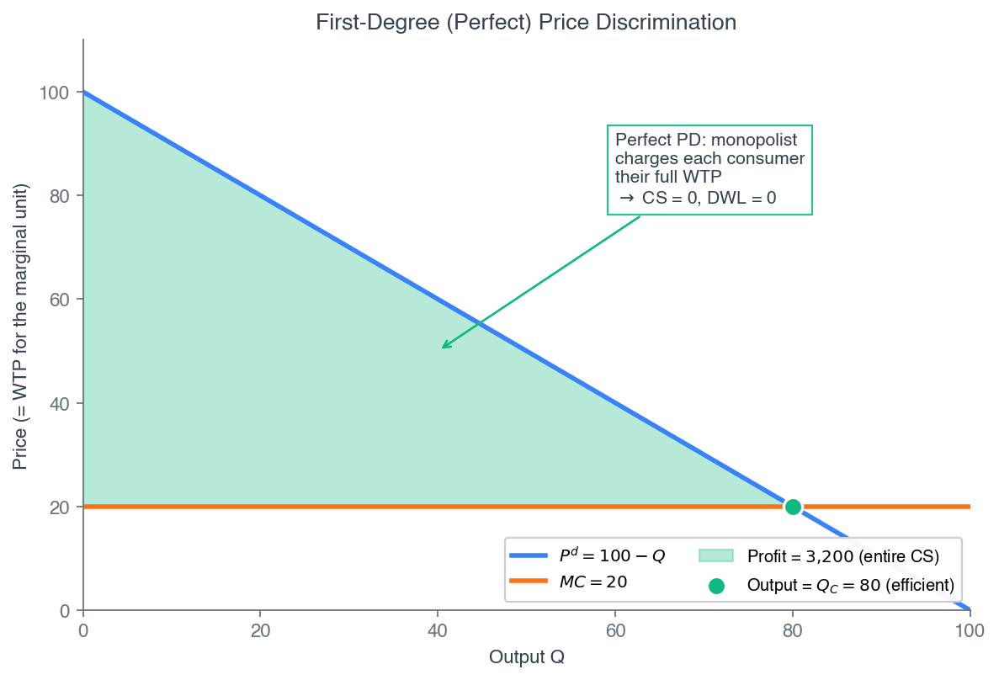
Fig 12.2 — every unit with \(P^d > MC\) trades; all surplus goes to the firm.
Drag the Number of Price Tiers: Uniform → Perfect PD
Demand \(P = 100 - Q\); \(MC = 20\). With \(k\) optimally-set price blocks, output is \(Q_k = \tfrac{k}{k+1}\,Q_C\) and profit is \(\Pi_k = \tfrac{k}{k+1}(3200)\). At \(k = 1\) this is the uniform monopoly (\(Q = 40\), \(\pi = \$1{,}600\), \(DWL = \$800\)); as \(k\) grows the blue captured surplus rises toward \$3,200 and the red DWL shrinks to zero.
Walkthrough 12.1 — Perfect PD on Linear Demand
Problem. Demand \(P^d(Q) = 100 - Q\), constant \(MC = 20\). Compare (a) competitive, (b) uniform monopoly, (c) perfect PD — tally CS, PS, and DWL in each.
Set up & solve
(a) Competitive \(P=MC\): \(Q_C = 80\), \(P_C = \$20\). \(CS = \tfrac12(80)(80) = \$3{,}200\), \(PS = 0\), \(DWL = 0\).
(b) Uniform monopoly \(MR = 100 - 2Q = 20\): \(Q_M = 40\), \(P_M = \$60\). \(\pi = (40)(40) = \$1{,}600\), \(CS = \$800\), \(DWL = \$800\).
Perfect PD & check
(c) Perfect PD: every unit with \(P^d > MC\) trades, so \(Q_{PD} = 80\). Profit is the area under demand above \(MC\):
\(\pi_{PD} = \displaystyle\int_0^{80}(80 - q)\,dq = 6400 - 3200 = \$3{,}200\)
\(CS_{PD} = 0\), \(DWL = 0\). Profit equals competitive total surplus — the firm captured everything.
Takeaway. Surplus split moves \(0/\$3{,}200\) (competition) → \(\$1{,}600/\$800\) (uniform monopoly) → \(\$3{,}200/0\) (perfect PD), firm/consumer. Perfect PD is the upper bound: efficient and fully extractive. Real firms fall short for one reason — information.
Personalized PD: The Thought Experiment Is Arriving
Wendy's (Feb 2024): \$30M digital menu boards to test “dynamic pricing.” Public backlash — “surge pricing on burgers” — forced a walk-back in two weeks.
Delta (2025): ~3% of domestic fares routed through a Fetcherr AI engine, scaling toward ~20% by end-2026. After Senate pressure, Delta said it uses market-level data only.
FTC (Jan 2025): 6(b) surveillance-pricing study of eight intermediaries finds a wide range of personal data feeding individualized-pricing tools.
Heads Up 12.2 — possible, but constrained
Treating first-degree PD as “the bound nobody reaches” was true for the 20th century. Cookies + ML + cross-platform identity graphs make individualized pricing operational today.
The binding constraint is no longer technological — it is political and legal: the FTC report, the EU Digital Markets Act, and state AI laws (Colorado 2024). The new questions: which firms can, what regulators allow, and how consumers react.
§12.3
Second-Degree PD
Versioning & screening: offer a menu, let buyers reveal themselves
Second-Degree — Build a Menu, Let Buyers Sort Themselves
The firm can’t tell who you are — so it designs options and lets you reveal your type by choosing.
Quantity discounts. Costco 50-bag box at $0.45/bag vs $0.50 at the corner store.
Versioning. Tesla Model Y: $39,990 → $57,490, same shell, software-gated tiers.
Two-part tariffs. Gym: $300/yr + $10/class. Buffet: $20 in, $0/plate.
Bundling. $15 CD (12 songs) → iTunes $0.99 unbundled → Spotify re-bundles 100M songs at $10.99.
Netflix tiers: $6.99 ad-supported vs $22.99 premium — a $16 gap for the same library. Cinephiles self-select up; budget households (higher elasticity) self-select into ads. ~70M ad-tier users by 2025.
It’s indirect PD — used when the firm has market power and can prevent resale, customers have different demand curves, but the firm can’t identify a buyer’s type before purchase. Its tool: post a menu of pricing options and let customers self-select.
Quantity Discounts
Firms often use quantity discounts to price-discriminate — a lower per-unit price for buyers who purchase larger quantities. It is the workhorse of second-degree PD.
It is indirect PD: the firm posts the menu and each consumer group self-selects the package meant for it — the price offered to a group must be the one that group chooses.
It rides on incentive compatibility (IC): the deal aimed at one type must be the one that type actually prefers — no buyer profitably grabs another type's package.
The catch: discount too steeply on the large quantity and you cannibalize — the low-demand buyer abandons the small package and grabs the bulk deal meant for the high-demand buyer. IC breaks.
Quantity Discounts — Buy in Bulk, Pay Less per Unit

Costco (50-pack): $22.99 ÷ 50 = $0.45 / bag
Star Market (single): $0.50 / bag
Buying in bulk → a lower cost per unit. The big-box buyer reveals low per-unit WTP; the convenience buyer pays more. Pricing by quantity is second-degree PD.
Two Buyer Types, One Menu
If it could tell them apart, the firm would set MR = MC for each (MC = \$0.30) — reading \$0.59 off the occasional buyer's demand, \$0.50 off the obsessed buyer's.
Occasional buyer — Q* = 1 @ \$0.59
Obsessed buyer — Q* = 2 @ \$0.50
But it can't tell them apart — so it posts a menu: 1 bag \$0.59 or 2 for \$1 (\$0.50 each), and hopes each picks its own. Will the occasional buyer grab the bulk deal? (next)
Incentive Compatibility — Will the Occasional Buyer Defect?
Tempt the occasional buyer with the 2-for-\$1 deal. Compare what they gain against what they lose. (Press →)
Gain — the per-bag price drops \$0.59→\$0.50 on the bags they'd buy anyway.
Loss — the deal forces a 2nd bag at \$0.50 they value below \$0.50 (the units past 1.2).
Here the red loss > gain, so the occasional buyer stays with the single \$0.59 bag. ✓ IC holds.
The Design Rule for a Quantity Discount
Gain from the bulk deal
cheaper price on bags they'd buy anyway
<
Loss from the bulk deal
overpaying for low-value extra bags
Gain \(\textbf{<}\) Loss ⇒ the occasional buyer keeps the single bag — Incentive Compatibility: Check
Flip it and IC fails: if the firm cut the bulk price too far (say 2 for \$0.80), the orange gain would swamp the red loss — the occasional buyer defects to the bulk deal and the firm cannibalizes its own full-price sale.
Versioning
Versioning — a pricing strategy in which a firm offers different product options designed to attract different types of consumers.
Common example: air travel — the same plane sells leisure and business fares, fenced apart by advance-purchase and stay rules.
Versioning does not require a cost difference — the marginal costs of the versions need not be equal.
The only requirement: the markup must be higher for the segment with the less elastic demand — business travelers (inelastic) carry the higher markup; leisure travelers (elastic, price-sensitive) pay less.
Versioning — Buyers Self-Select
Offer a menu of versions and let each buyer voluntarily pick the one best for them — revealing their type. The firm prices by the version chosen, not by who you are. To make buyers split, firms widen the gap between tiers — sometimes intentionally limiting the cheaper one (the “damaged-goods” idea: stripped Basic Economy, a deliberately crippled chip).
Spotify is textbook versioning: Individual ($11.99), Duo ($16.99 / 2 accounts), Family ($19.99 / up to 6 accounts). Households self-select by size, and the cheaper tiers are deliberately capped (one account, same-address rules) so higher-value households pay more.
The “Stripped” Economy — Damaged Goods
The flip side of versioning: a firm will deliberately make the cheap version worse — spending nothing, or even money, to degrade it — so high-WTP buyers refuse to trade down and pay for the premium tier.
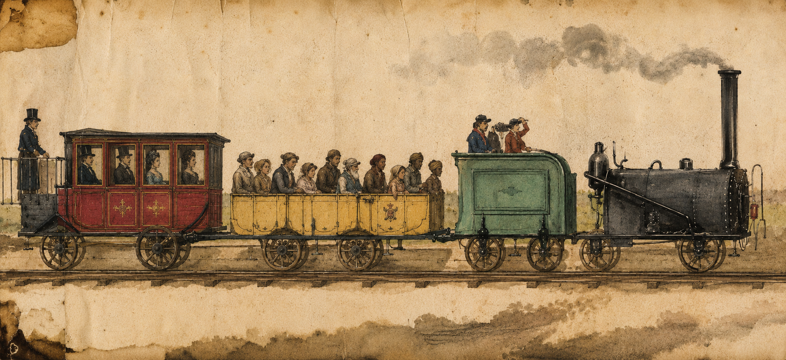
Then. 1840s railways ran roofless third-class cars. Dupuit (1849): they did it “not to hurt the poor, but to frighten the rich” into buying first class.

Now. Ever-tighter “stripped” economy seats (and Basic Economy) keep the cheap tier just painful enough to upsell.
Self-Sorting Captures the Entire Demand Curve

To fund $17B+/yr of content like Stranger Things, Netflix uses the identical core product to monetize the bottom of the curve without sacrificing the margins at the top.
Product Versioning — Tesla Model Y
One car, four software- and hardware-gated versions. Buyers self-select from $39,990 to $57,490 — same shell, very different price.

Versioning in Action — Tesla Model Y
Tesla offers two versions of the Model Y — Standard and Performance. Assume these willingness-to-pay values:
| Standard WTP | Performance WTP | |
|---|---|---|
| Budget consumer | \$45,000 | \$52,000 |
| Luxury consumer | \$50,000 | \$70,000 |
Charge \$39,900 for the Standard and \$57,490 for the Performance: (press →)
Budget → Standard. Surplus \$45,000 − \$39,900 = \$5,100 (Performance would give −\$5,490).
Luxury → Performance. Surplus \$70,000 − \$57,490 = \$12,510 (Standard would give only \$10,100).
Each type chooses its intended version — the menu is incentive compatible
Versioning — When IC Fails
Same WTP table. Now charge \$62,490 for the Performance (up from \$57,490); the Standard stays \$39,900. (press →)
| Standard WTP | Performance WTP | |
|---|---|---|
| Budget consumer | \$45,000 | \$52,000 |
| Luxury consumer | \$50,000 | \$70,000 |
Budget → Standard (still): surplus \$5,100. Performance would give −\$10,490.
Luxury → Standard now: Standard surplus \$10,100 > Performance surplus \$7,510.
Both types buy the Standard — the Performance never sells. The menu is NOT incentive compatible: overprice the high version and the luxury buyer defects down.
Can't Tell You Apart? Make You Choose
The firm knows the distribution of types but can't observe any individual's type — and can't just ask (everyone would claim the cheap type). Its only tool: a menu designed so each type's own best choice reveals it. Pricing becomes mechanism design.
Individual rationality (IR): each type's chosen package gives non-negative surplus, so it participates.
Incentive compatibility (IC): each type prefers its assigned package to any other on the menu — no profitable “deviation.”
Maximize profit subject to IR + IC for all types — the screening menu (Mussa-Rosen 1978; Maskin-Riley 1984). Two classic forms: versioning (quality tiers) and quantity discounts.
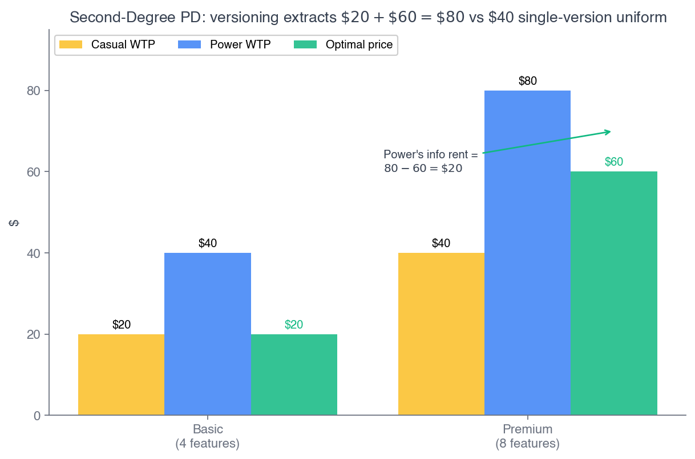
Fig 12.4 — two quality tiers; the high type self-selects up.
Walkthrough 12.2 — Versioning Two Software Tiers
Problem. Basic (4 features) vs Premium (8). Two equal types: Casual values a feature at \(v_C = 5\), Power at \(v_P = 10\). \(MC = 0\), types unobservable. Find the profit-max menu \((P_B, P_P)\).
| Basic (4) | Premium (8) | |
|---|---|---|
| Casual (\(v_C=5\)) | \$20 | \$40 |
| Power (\(v_P=10\)) | \$40 | \$80 |
WTP = features × per-feature value.
1. IR\(_C\) binds (tightest): \(P_B = 20\).
2. IC\(_P\) binds: Power won't deviate to Basic — \(80 - P_P \geq 40 - 20\), so \(P_P \leq 60\). Set \(P_P = 60\).
3. Profit per pair \(= 20 + 60 = \$80\). Best single-version uniform price earns only \(\$40\) — the menu doubles it.
Information rent: perfect PD would take \(20 + 80 = \$100\). The menu leaves Power \(\$80 - \$60 = \$20\) — the price of not observing types.
Takeaway. Screening lifts profit \(\$40 \to \$80\), short of perfect PD's \(\$100\) by the \(\$20\) information rent. Power voluntarily reveals itself by buying Premium; the firm rewards that revelation by letting it keep the surplus difference.
Walkthrough 12.3 — Quantity-Discount Menu
Problem. Two equal types: Small \(q_S(p) = 3 - p\), Large \(q_L(p) = 6 - p\). \(MC = 0\). Design two packages — small (\(q_s = 3\), price \(T_S\)) and large (\(q_l = 6\), price \(T_L\)).
Surplus & binding constraints
CS by area: \(CS_S(3) = 4.5\); \(CS_L(3) = 13.5\), \(CS_L(6) = 18\).
IR\(_S\): \(T_S \leq 4.5 \Rightarrow T_S = 4.5\). IC\(_L\): \(18 - T_L \geq 13.5 - 4.5 = 9 \Rightarrow T_L = 9\).
Profit & rent
Profit per pair \(= 4.5 + 9 = \$13.50\). Best uniform price: \(p^{\ast} = 2.25\), \(\pi = \$10.13\) — the menu lifts it 33%.
Perfect PD upper bound \(= 4.5 + 18 = \$22.50\); the \(\$9\) gap is the rent Large pockets (\(CS_L(6) - T_L = 18 - 9\)).
Maskin-Riley menu: no distortion at the top (Large buys its first-best \(q_l = 6\)), distortion/rent at the bottom (Small's IR binds at its reservation). Spotify field analog: the \$9.99 Audiobooks tier omits the music library — a deliberate quality cut so Premium buyers don't deviate down. That's IC enforcement, not cost saving.
§12.4 — the central tool
Third-Degree (Group) PD
The Ch 11 inverse-elasticity rule, applied per segment: \(L_i = -\dfrac{1}{\varepsilon_{D,i}}\)
Segmenting — Third-Degree PD
First-degree (individual) pricing usually needs too much information. Instead, firms use common characteristics to segment — charging different prices to different groups based on identifiable attributes (groups, not individuals).
When to use it
1. Market power + can prevent resale.
2. Customers have different demand curves.
3. The firm can identify groups (not individuals) with different price sensitivities before purchase.
Third-degree extracts more surplus than a single-price monopolist — but less than first-degree (it sorts groups, not individuals).
Examples: senior-citizen and student discounts. Each group's markup follows the per-segment inverse-elasticity rule \(L_i = -1/\varepsilon_{D,i}\) (next).
Third-Degree — Different Price to an Observable Group
Spotify. $11.99 Individual vs $5.99 Student. Students have higher elasticity; a .edu check prevents arbitrage. Charge them full price and you lose them entirely.
Airlines. Business travelers (last-minute, inelastic) pay premium fares; leisure travelers (flexible, elastic) pay discounts. The ticket is non-transferable — arbitrage blocked.
The logic is always elasticity: charge the inelastic group more, the elastic group less. Segment by an observable trait — age, student status, location, timing — and stop resale.
Key contrast with second-degree: here the seller observes your group and assigns the price; there, you pick from a menu.
Third-Degree — the Student Discount
Definition. Pricing is differentiated for different consumer groups based on an observable characteristic (a proxy for their elasticity) — e.g. the Student Discount.
Third-Degree — Student Platforms (UNiDAYS)
Platforms like UNiDAYS gate deals (HP, Microsoft 365) behind a verified student ID. The long-run twist: once students learn these tools, they keep using them at work — becoming more inelastic later, when they'll pay full price.
Third-Degree — Movie Tickets (by Age)
Movie theaters charge different ticket prices for children, adults, and seniors — age is the observable trait, and the ticket is checked at the door (no resale).
Third-Degree — Airline Fares
Airlines charge varying fares to leisure (elastic) vs business (inelastic) travelers.
- Prices rise as the departure date nears (late buyers = business).
- Lower fares on non-peak days & with advance booking (leisure).
- The ticket must be used by the purchaser — arbitrage blocked.
Isolating Impulsive Buyers — Without Cutting Margins
Gen Z User (Impulsive)
TikTok's algorithm tracks watch-time to the millisecond and fires highly targeted flash coupons to trigger impulse buys.
Discount
Older Demographic (Direct Search)
Older buyers viewing the exact same product see no discount.
This isolation generated $65B in GMV for TikTok Shop in 2025. Sellers optimize revenue by never running site-wide discounts that would erode profit from buyers already willing to pay full price.
Disneyland's Local-Resident Pricing
Two distinct consumer groups at Disneyland: Locals and Travelers (who fly in from elsewhere). A good case for third-degree PD?
Market power? Yes — iconic destination, few close substitutes.
Different demand curves? Yes — travelers likely differ from locals.
Identify groups & prevent resale? Yes — require ID → effective segmentation.
Why the Two Demand Curves Differ
Income: travelers tend to have higher incomes — less sensitive to the fee.
The entry fee is a small share of a traveler's total trip (airfare, hotel) — so they're less price-sensitive.
Result: travelers' demand is steeper (less elastic) than locals'.
(a) Travelers
(b) Locals
Segmenting entry fees: each group priced where its own MR = MC; the less-elastic travelers pay more (\$220 vs \$170).
The Benefits of Segmenting — the Math
Travelers
\(Q_T = 1{,}700 - 5P_T\)
Locals
\(Q_L = 2{,}400 - 10P_L\)
The bigger price coefficient (\(-10\) vs \(-5\)) means locals are more price-sensitive than travelers. Marginal cost of an extra entry is constant at \(\$100\).
Solve Each Segment: MR = MC
Travelers
\(P_T = 340 - 0.2Q_T\), so \(MR_T = 340 - 0.4Q_T\).
\(MR_T = MC:\; 340 - 0.4Q_T = 100\)
\(\Rightarrow Q_T = 600,\quad P_T = \$220\)
Locals
\(P_L = 240 - 0.1Q_L\), so \(MR_L = 240 - 0.2Q_L\).
\(MR_L = MC:\; 240 - 0.2Q_L = 100\)
\(\Rightarrow Q_L = 700,\quad P_L = \$170\)
Travelers pay \(\$220\); locals pay \(\$170\) — the less-elastic group is charged the higher price (the inverse-elasticity rule, per segment).
Producer Surplus from Segmenting
PS = (price − MC) × quantity, summed over the two groups:
Travelers
\(PS_T = (\$220 - \$100)\times 600\)
\(= \$72{,}000\)
Locals
\(PS_L = (\$170 - \$100)\times 700\)
\(= \$49{,}000\)
\(PS_{\text{combined}} = \$72{,}000 + \$49{,}000 = \mathbf{\$121{,}000}\)
How does this compare to a single-price monopolist?
Calculus Corner 12.1 — Inverse-Elasticity Rule, Per Segment
With \(K\) non-arbitrageable segments and constant \(MC\), maximize
\[ \pi = \sum_i (P_i - MC)\,Q_i(P_i) \]
Each segment's FOC is independent of the others:
\[ Q_i + (P_i - MC)\,Q_i' = 0 \]
Multiply by \(P_i/Q_i\) and rearrange:
\[ L_i = \frac{P_i - MC}{P_i} = -\frac{1}{\varepsilon_{D,i}} \]
Equivalently \(P_i = \dfrac{MC}{1 + 1/\varepsilon_{D,i}}\). The rule from Ch 11 simply fires \(K\) times in parallel — once per segment.
The more-elastic segment gets the smaller markup. Students pay less because their demand is more elastic; business travelers pay more because theirs is not.
The only difference from Ch 11: Ch 11 had one segment, Ch 12 has \(K\). Same engine, run per group — segments don't interact because there's no arbitrage between them.
Application 12.1 — Spotify's Portfolio as Live Third-Degree PD
Five distinct prices for functionally the same library — each segment with a different elasticity, a different anti-arbitrage technology, and a different observed Lerner index. Spotify's Q4 2025 blended global ARPU of €4.70 (~\$5.10/mo) sits far below the US Individual list of \$11.99 — a wedge driven by exactly this multi-segment cross-subsidization.
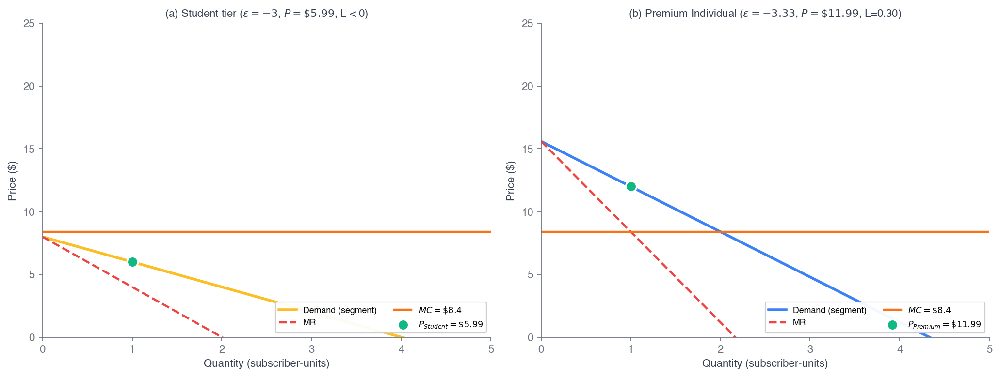
Fig 12.3 — two segments, common \(MC\); each priced where \(MR_i = MC\). Less elastic → higher price.
Walkthrough 12.4 — Student vs Premium via Inverse Elasticity
Problem. Ch 11–locked \(MC = \$8.40\). Calibration elasticities: \(\varepsilon_S = -3.0\) (Student), \(\varepsilon_P = -3.33\) (Premium). Predict each price by \(P_i^{\ast} = MC/(1 + 1/\varepsilon_{D,i})\) and compare to actual (\$5.99, \$11.99).
Predict
Premium: \(P_P^{\ast} = 8.40/(1 - 1/3.33) = 8.40/0.6997 = \$12.00\).
Student: \(P_S^{\ast} = 8.40/(1 - 1/3.0) = 8.40/(2/3) = \$12.60\).
Compare to actual
Premium: predicted \$12.00 vs actual \$11.99 — match within \$0.01 ✓.
Student: predicted \$12.60 vs actual \$5.99 — less than half, and below the \$8.40 MC. Actual Lerner \(L_S = (5.99 - 8.40)/5.99 = -0.40\) (negative!).
Takeaway. The formula nails Premium and misses Student by 2×. The miss isn't a math error — it's information: Spotify treats Student as a loss leader, cross-subsidized to lock in lifetime value when the student graduates. Static inverse-elasticity is a benchmark, not a description; divergence carries information about dynamic strategy.
How Much Should Each Segment Be Charged?
A segmenting monopolist treats each segment as its own market, so the Lerner index sets the optimal markup per segment:
\(\dfrac{P - MC}{P} = -\dfrac{1}{\varepsilon_D}\)
Solve it segment by segment. At the Disneyland optimum:
Travelers: \(\varepsilon_D = -1.83\)
Locals: \(\varepsilon_D = -2.43\)
Price ratio implied by the two markups:
\(\dfrac{P_T}{P_L} = \dfrac{-1.83/(-1.83+1)}{-2.43/(-2.43+1)} = \dfrac{2.2}{1.7} = 1.29\)
Travelers should pay ~1.3× (about 30% more than) locals — exactly the \$220 / \$170 ratio from the Disneyland solve.
You Try — Upscale Movie Theater
An upscale theater has two locations. Boston: \(\varepsilon_D = -3\). New York: \(\varepsilon_D = -2\). Ticket marginal cost is \$6. Find the optimal price at each. (try it, then press →)
Use \(\dfrac{P - MC}{P} = -\dfrac{1}{\varepsilon_D}\):
Boston \((\varepsilon_D=-3)\): \(\dfrac{P-6}{P} = \dfrac{1}{3} \Rightarrow 3(P-6)=P \Rightarrow P_{\text{Boston}} = \$9\)
New York \((\varepsilon_D=-2)\): \(\dfrac{P-6}{P} = \dfrac{1}{2} \Rightarrow 2(P-6)=P \Rightarrow P_{\text{NYC}} = \$12\)
The less-elastic New York market pays more (\$12 vs \$9) — the inverse-elasticity rule again.
Walkthrough 12.5 — Family Tier: When the Formula Breaks
Problem. Same \(MC = \$8.40\). Assume Family-segment elasticity \(\varepsilon_F = -1.5\) (toward inelastic). Predict the Family-subscription price and compare to actual (\$19.99).
Apply the rule
\(P_F^{\ast} = 8.40/(1 - 1/1.5) = 8.40/(1/3) = \$25.20\). Predicted \$25.20 vs actual \$19.99 — off by \$5.21.
As \(|\varepsilon| \to 1\), \((1 + 1/\varepsilon) \to 0\), so \(P^{\ast} \to \infty\). The formula assumes the firm operates strictly where \(|\varepsilon| > 1\); near \(|\varepsilon| = 1\) it explodes.
What constrains real pricing
Per-account dilution (\$19.99 / 6 = \$3.33 < MC), household-sharing externalities, and a competitive ceiling (Apple Music Family \$16.99).
Real pricing = inverse-elasticity rule plus side constraints — exactly what a Ch 13 oligopoly model starts to formalize.
Takeaway. Near \(|\varepsilon| = 1\) the inverse-elasticity rule blows up, and actual pricing is pinned by competitive ceilings and account-mass economics the static formula can't see. The tool tells you where it stops being the whole story — that's the bridge to Ch 13.
Application — Wegovy Across Institutional Segments
Pharma = third-degree PD on steroids
Branded Wegovy carries segment-specific prices: Medicaid (statutory rebate floor), Medicare (IRA-negotiated Max Fair Price, effective Jan 1 2026), commercial (PBM-rebated 30–50% below list), and cash-pay (highest list).
Ch 11 cash-pay 4-tuple: \(P \approx \$1{,}349\), \(MC \approx \$5\), \(L = 0.996\), \(\varepsilon_D = -1.004\). Medicaid ~\$1,037/mo post-rebate, Lerner still ~0.99. Same drug; the system enforces the segments.
Heads Up 12.3 — PD welfare is ambiguous
PD does not always reduce welfare. If PD lets the firm serve a market it would otherwise abandon, total surplus rises (output expands). If it only redistributes CS→PS, surplus is unchanged. If it cuts output (rare), surplus falls.
Evidence is mixed: Williams (2022, airlines) finds dynamic pricing raises welfare via output expansion; Crawford-Yurukoglu (2012, cable) finds CS falls ~5%. The welfare question is empirical, not theoretical.
Theory and Data 12.1 — Spotify's Jan 15, 2026 Portfolio Reset
On Jan 15, 2026 Spotify reset the whole US ladder: Individual \(\$11.99 \to \$12.99\), Student \(\$5.99 \to \$6.99\), Duo \(\$16.99 \to \$18.99\), Family \(\$19.99 \to \$21.99\). Audiobooks stayed at \$9.99.
If per-subscriber MC scales at 70% of list, the new MC is \(0.70 \times 12.99 = \$9.09\). The new Lerner is \(L = (12.99 - 9.09)/12.99 = 0.300\) — exactly unchanged. Implied \(\varepsilon_D = -3.33\), also unchanged.
A firm at the FOC, facing the same elasticity and the same MC-as-share-of-price, moves list price and MC in lockstep — holding the markup constant against royalty-cost inflation.
\$12.99
New Individual (was \$11.99)
\$9.09
New implied royalty \(MC\)
0.300
Lerner \(L\) — held constant
−3.33
Implied \(\varepsilon_D\) — unchanged
Poll #1 — Who Gets the Lower Price?
A monopolist price-discriminates across two observable segments with the same \(MC\). Segment 1 has elasticity \(\varepsilon_1 = -4\); Segment 2 has \(\varepsilon_2 = -1.5\). Which segment is charged the lower price?
60 sec to vote
Answer: A — the more elastic segment pays less
Per segment, the markup is the inverse of elasticity: \(L_i = -1/\varepsilon_{D,i}\). More elastic → smaller markup → lower price.
\( L_1 = -\tfrac{1}{-4} = 0.25 \quad < \quad L_2 = -\tfrac{1}{-1.5} = 0.667 \)
Trap C: equal \(MC\) does not mean equal price — under PD the firm runs the inverse-elasticity rule separately per segment. Same cost, different elasticities → different prices. This is why Spotify Student (\$5.99) undercuts Premium (\$11.99).
The “Pink Tax”: Price Discrimination or a Cost Difference?
The observation
- Products and services aimed at women — razors, shampoo, haircuts — are often more expensive than the versions for men.
- The 2015 NYC DCA report found an average price gap of 7%–13%.
Same shelf, two prices — but is the gap price discrimination (women less willing to switch) or a cost difference? You can't tell from the price tags alone.
The Pink Tax: Price Discrimination — or the Evidence?
Hypothesis 1 — Price Discrimination. Firms charge women higher markups because their demand is less price-elastic (lower willingness to switch brands).
Hypothesis 2 — Cost Difference. Recent studies on goods (e.g. shampoo) challenge the PD story:
- Moshary et al.: comparing the same brand with the same leading ingredients, the gap vanished or reversed — women's versions were cheaper ~60% of the time.
- Barnes & Brounstein: econometrics find women's demand is slightly more elastic than men's — the opposite of what PD requires.
Conclusion (goods): the evidence points to different production costs (pricier ingredients/packaging), not gender-based price discrimination.
Caveat: for services like haircuts the cause is still unsettled — could be higher cost or discrimination.
The lesson: a visible price gap is not proof of discrimination — you need evidence on costs and elasticities.
Application: Price Discrimination in the European Car Market
The strategy — segment by country. Automakers (e.g. VW) sell the same car at different prices across European countries, charging higher markups where local demand is less elastic.
Preventing resale (arbitrage):
- manuals printed only in the local language;
- servicing restricted to the country of purchase;
- dealers punished for selling across borders.
The evidence (Goldberg & Verboven): the same VW Golf varies sharply. In 2015, Portugal > Germany > Greece — a Golf was ~20% dearer in Germany than Greece, but ~20% cheaper than in Portugal.
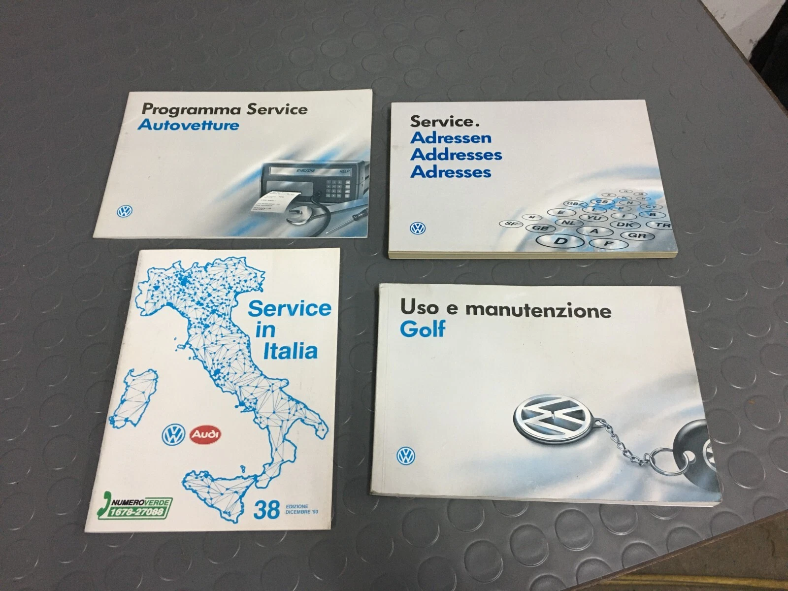
Some of the gap is taxes — but much is third-degree price discrimination: higher prices where demand is less elastic (Portugal), lower where it's more elastic (Greece), with arbitrage actively blocked.
§12.5
Block Pricing
A high price for the first block, less for the next — capture surplus from one buyer's own demand
Block Pricing — When to Use It
Two conditions for block pricing and two-part tariffs:
1. The firm has market power and can prevent resale.
2. Its customers may have identical or different demand curves.
Block pricing is the practice of reducing the price of a good as the customer buys more of it.
Unlike indirect price discrimination (quantity discounts), block pricing does not need to read buyers' demand curves — the same schedule is posted for everyone.
Block Pricing in Action — Business Flyers
- Varying unit prices offered to the same customer.
- A high price for the first block, lower for subsequent blocks.
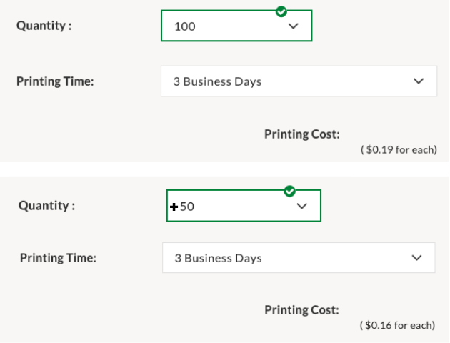
A real printer: first 100 flyers at $0.19 each, the next 50 at $0.16 each.
Block Pricing at Cloud Scale — Amazon S3
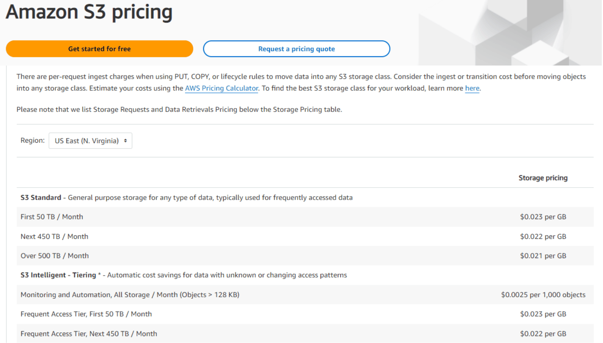
Amazon S3 storage is a declining-block tariff — the per-GB price falls the more you store:
- First 50 TB / month: $0.023 / GB
- Next 450 TB / month: $0.022 / GB
- Over 500 TB / month: $0.021 / GB
Same buyer, a lower unit price as quantity rises — textbook block pricing. Heavy users slide into a cheaper marginal rate, while AWS still earns the high rate on the first, most-valued terabytes.
§12.5
Two-Part Tariffs
Entry fee \(F\) + per-unit price \(p\): replicate perfect PD without reading minds
Two-Part Tariff
A two-part tariff is a pricing strategy in which the payment has two components: a fixed fee \(F\) plus a per-unit price \(p\) — the customer pays \(F + p \times Q\).
The fixed fee gets you in the door; the per-unit price is charged on use:
fixed fee = console · per-unit = each game
fixed fee = annual membership · per-unit = hourly rental
fixed fee = cover charge · per-unit = each beverage
fixed fee = yearly charge · per-unit = any purchase
Two-Part Tariffs — the Gym
The annual fee captures consumer surplus up front; the per-class price = marginal cost, so members keep using the gym efficiently instead of being priced out.
Two-Part Tariffs — the Buffet
Once the trays are cooked, unsold food is thrown out anyway — so the marginal cost of one more plate ≈ $0. The buffet charges $0 per plate and captures all the surplus in the entry fee.
Two-Part Tariffs — the Local Car Wash

Wages and rent are already paid to open the doors — so the marginal cost of one more wash ≈ $0. The unlimited monthly fee captures the surplus; the per-wash price ≈ $0.
Two-Part Tariff: How to Determine Part One?
Figure 10.7 — Two-Part Tariff
Maximize producer surplus in two parts:
Part 2 — per-unit price = MC = $10/class. At usage price = MC the customer buys the efficient quantity (Q = 6, where D = MC).
Part 1 — membership = the whole CS triangle = A + B + C = $60/mo (½ × 6 × $20). The fixed fee equals the consumer surplus efficient consumption creates.
Price the usage at MC, then set a fixed fee equal to A + B + C — the firm delivers the competitive quantity yet collects the entire surplus.
MC ≈ $0 case (gym · buffet · Disneyland): Part 2 = $0, so the fee captures the entire area under demand.
Application 12.2 — Disney's FastPass → Lightning Lane
A two-part tariff charges a fixed entry fee \(F\) (independent of use) plus a per-unit price \(p\). Disney is the canonical case — and it sharpened the structure in real time.
Until 2021, admission was the only price; in-park rides were free at the margin. Then Disney unbundled queue priority into paid Lightning Lane (\$10–\$35/ride). Now there are two prices: gate admission as \(F\) (\$169–\$209/day; up to the \$1,629 Incredi-Pass) and per-attraction Lightning Lane as \(p\).
Per-capita Parks revenue rose materially after the switch — and Universal, SeaWorld, and Six Flags copied it. Costco, Amazon Prime, AWS, and gyms use the same template.
Disney's gate fee \(F=\$169\)/day sweeps up the whole surplus triangle (rides at \(MC\approx\$0\)); post-2021 Lightning Lane adds p = $10–35/ride.
Calculus Corner 12.2 — The Two-Part Tariff Lagrangian
Identical consumers, demand \(q(p)\), \(CS(p) = \int_p^{p_{\max}} q(t)\,dt\). Maximize profit per consumer subject to participation:
\[ \mathcal{L} = F + (p - MC)\,q(p) + \lambda\,[CS(p) - F] \]
FOC in \(F\): \(1 - \lambda = 0 \Rightarrow \lambda = 1\) — participation binds. FOC in \(p\), using \(\partial CS/\partial p = -q\):
\[ q + (p - MC)\,q' - q = 0 \;\Rightarrow\; (p - MC)\,q' = 0 \]
Since \(q' < 0\), the only solution is \(p = MC\).
\( p^{\ast} = MC, \qquad F^{\ast} = CS(MC) \)
Profit per consumer \(= CS(MC)\) — the entire competitive surplus. Output equals the competitive level, so there's no DWL; the entry fee converts what would have been CS into a lump-sum extraction.
This is why Disney charges high gate admission, Costco high membership, AWS large up-front commitments: \(F\) is the surplus-capture instrument; pricing usage near MC maximizes the surplus there is to capture.
Walkthrough 12.6 — Disneyland Canonical (Homogeneous)
Problem. Representative consumer with demand \(q(p) = 10 - p\), \(MC = 0\). Find the optimal two-part tariff and compare profit to single-price monopoly.
Two-part optimum
From CC 12.2: \(p^{\ast} = MC = 0\), \(F^{\ast} = CS(0) = \tfrac12(10)(10) = \$50\).
Profit per consumer \(= 50 + 0\cdot 10 = \$50\). Output \(q = 10\) (the competitive level).
Compare & check
Uniform monopoly: \(\pi(p) = p(10 - p)\), \(p^{\ast} = 5\), \(q = 5\), \(\pi = \$25\), with \(CS = \$12.50\) left over.
Two-part doubles profit (\$50 vs \$25), drives \(CS \to 0\), and produces the efficient \(q = 10\). Total surplus rises \$37.50 → \$50 — and the firm takes all of it.
Takeaway. With homogeneous consumers, a two-part tariff replicates first-degree PD by a different mechanism: the entry fee is the surplus-capture instrument, and \(p = MC\) keeps the pie as large as possible. High gate fee, cheap rides.
Two-Part Tariff with Different Customer Demands
Per-unit price = MC, but the firm can't tell the two types apart. What single fixed fee \(F\)?
Fee = A (the low type's surplus): both customers stay → collect \(2A\).
Fee = B (the high type's surplus): only the high type stays (A < B) → collect \(B\).
Charge whichever is larger: serve everyone at fee A for \(2A\), or exclude the low type and charge \(B\). The firm compares \(2A\) vs \(B\).
Walkthrough 12.7 — Heterogeneous Types: Include or Exclude?
Problem. Two equal types: \(q_A(p) = 10 - p\), \(q_B(p) = 6 - p\). \(MC = 0\). Set \(F\) low to keep both in, or high to extract from A and exclude B?
Strategy I — include both
\(F\) binds on B: \(F = (6-p)^2/2\). Per pair: \(\pi^{\text{I}} = (6-p)^2 + p(16-2p) = 36 + 4p - p^2\).
FOC: \(p^{\ast} = 2\), \(F^{\ast} = (4)^2/2 = 8\). \(\pi^{\text{I}} = 36 + 8 - 4 = \$40\).
Strategy II — exclude B
Charge \(F = CS_A(0) = (10)^2/2 = 50\), set \(p = 0\). A pays \$50; B walks. Per pair: \(\pi^{\text{II}} = \$50\).
Compare: \(50 > 40\). Excluding the low-WTP type wins — the fee that retains B (\$8) is only \(1/6\) of the fee A alone will pay (\$50).
Takeaway. With heterogeneous types the firm faces a coverage-vs-extraction tradeoff — and excluding the low type can dominate. This is why Equinox (\$300/mo) and Disney Incredi-Pass (\$1,629) deliberately don't serve the mass market, while Costco (\$65) does. Each picks its spot on the trade by the type distribution it faces.
§12.6
Bundling
When valuations are negatively correlated, the package beats the parts
Bundling
Bundling — a pricing strategy in which a firm sells two or more products together at a single price.
When to use it
1. The firm has market power and can prevent resale.
2. Consumers' demand for the second product is negatively correlated with their demand for the first.
Everyday example: Internet + streaming sold together — e.g. \$70/month for Internet plus a set of streaming services, instead of \$40 Internet + \$15 Netflix + \$15 HBO Max + \$8 Disney+ à la carte.
Bundling — Positively Correlated Demand
Two consumers — Madison and Dakota — shopping for streaming. First, positively correlated demand: whoever values one service more values the other more. (Notflix = a fictional service streaming obscure movies.)
Positively Correlated Valuations (per subscriber-month)
| Netflix | Notflix | Bundle | |
|---|---|---|---|
| Madison | \$18 | \$2 | \$20 |
| Dakota | \$20 | \$3 | \$23 |
Sell separately: \$18 Netflix + \$2 Notflix, both buy both → \$40 total.
Bundle: \$20 bundle, both buy → \$40 total.
No benefit to bundling when valuations are positively correlated — both consumers rank the two services the same way, so one price captures no extra surplus.
Bundling — Negatively Correlated Demand
Same market, now negatively correlated demand — the consumer who values Netflix more values Notflix less.
Negatively Correlated Valuations (per subscriber-month)
| Netflix | Notflix | Bundle | |
|---|---|---|---|
| Madison | \$18 | \$3 | \$21 |
| Dakota | \$20 | \$2 | \$22 |
Sell separately: \$18 Netflix + \$2 Notflix → \$40 total.
Bundle: \$21 bundle, both buy → \$42 total (+\$2).
Bundling raises revenue \$40 → \$42 with negative correlation: it compresses the spread in total WTP (both value the bundle near \$21–22), so a single price captures more.
Pure vs Mixed Bundling
Pure bundling: the firm offers the products only as a bundle — no standalone option.
Mixed bundling: the firm lets consumers buy the products separately or as a bundle — whichever they prefer.
Example: value meals at fast-food restaurants — order à la carte, or grab the combo for less than the sum of its parts.
Bundling — the CD-Era “Forced Bundle”
The album bundles 1 hit with 11 filler tracks into one $15 product. Want just the hit? You still buy all 12.
How the bundle captures consumer surplus:
- A fan who loves all 12 songs would gladly pay $15 — nothing extra captured.
- A casual listener who wants only the hit also pays $15 — the firm captures the surplus she'd have kept if she could buy one song.
In the 1990s the marginal cost of pressing & shipping a CD was high — selling single songs wasn't worth it, so the bundle was the product.
Tech Unbundles — iTunes à la Carte
The MP3 pushed the marginal cost of one more song to ≈ $0. iTunes (2003) sold songs individually at $0.99.
- Consumer surplus ↑: the one-song buyer pays $0.99, not $15.
- Producer revenue ↓: buyers who'd have paid $15 now grab just their 3 favorites = $2.97.
Unbundling handed surplus back to consumers — and collapsed total industry revenue.

The “All-You-Can-Eat” Bundle — Spotify
A subscription is a new kind of bundle: instead of 12 songs, Spotify bundles all 100M songs for one flat monthly price.
Self-selection (versioning):
- Low-WTP / price-sensitive → the free, ad-supported tier.
- High-WTP → Premium ($10.99/mo) — ad-free, offline, any order.
It re-bundles the unbundled customer — a stable, high-value revenue stream from the highest-WTP listeners.

Pure vs Mixed Bundling — and Why It Pays
Pure bundling: only the package sells. Microsoft 365 — no standalone Word subscription.
Mixed bundling: bundle and standalones. Adobe — apps \$22.99 each, all-apps \$59.99.
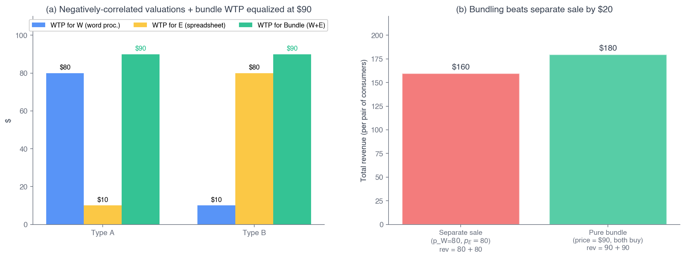
Fig 12.6 — consumers in valuation space; the bundle compresses the WTP distribution.
Calculus Corner 12.3 — Adams-Yellen Bundling
Two equal-mass types with valuations \((v_i^X, v_i^Y)\), \(MC = 0\). Bundle WTP \(V_i = v_i^X + v_i^Y\).
Pure-bundle revenue: \(R_B(P) = P\cdot|\{i : V_i \geq P\}|\).
Separate-sale revenue: \(R_S = p_X|\{v_i^X \geq p_X\}| + p_Y|\{v_i^Y \geq p_Y\}|\).
Result. If \(\text{Cov}(v^X, v^Y) < 0\), pure bundling weakly dominates separate sale.
Why. Negative cross-correlation compresses the variance of the bundle WTP \(V\) below the sum of the component variances. A tighter distribution lets a single price capture more consumers near the median bundle WTP.
Mixed bundling weakly dominates pure bundling — offering standalones too lets the firm also extract from extreme-preference types who'd skip a pure bundle but pay for one component.
Adams & Yellen (1976, QJE). The sign of the correlation is the whole test.
Walkthrough 12.8 — Pure Bundling, Negatively-Correlated WTP
Problem. Word (W) and Excel (E), \(MC = 0\). Two equal types — A: \((v^W, v^E) = (80, 10)\); B: \((10, 80)\). Compare separate sale vs pure bundling.
| Word | Excel | Bundle | |
|---|---|---|---|
| Type A | \$80 | \$10 | \$90 |
| Type B | \$10 | \$80 | \$90 |
Separate: best \(p_W = 80\) (only A) \(= \$80\); by symmetry \(p_E = 80 = \$80\). Total \(= \$160\).
Pure bundle: \(P = 90\) — both value the bundle at \$90, both buy. Revenue \(= \$180\).
Correlation: \(\text{Cov}(v^W, v^E) = \tfrac12(800) + \tfrac12(800) - 45\cdot45 = 800 - 2025 = -1225 < 0\) ✓.
Bundle \$180 \(>\) separate \$160 — a 12.5% lift, entirely from the negative correlation.
Takeaway. The bundle compresses both types' WTP to a common \$90, so one price captures both. Microsoft's Office bundle survives because writers and analysts have negatively correlated WTPs — neither pays \$80 for the other's app, but both pay \$90 for the package. Same logic: Disney+/Hulu, the fast-food meal deal.
Theory and Data 12.2 — Cable TV, and the Cousin of Bundling: Tying
Crawford-Yurukoglu (2012, AER)
Across 33 metro markets, bundling channels into tiers (vs à-la-carte) reduces consumer surplus ~5% on average — but total-welfare effects range \(-1.7\%\) to \(+6.0\%\), because tiering keeps niche networks alive that wouldn't survive standalone.
Bundling welfare is empirically mixed — sign depends on industry demand and supply structure.
Tying — procompetitive or not?
Tying: sell A only if the buyer also takes B. Microsoft 1998 (IE + Windows); EU fined Apple €1.8B (Mar 2024) for App Store anti-steering; Apple-Epic ruling (Apr 2025).
Two theories: Adams-Yellen (procompetitive surplus capture) vs leverage (use dominance in A to foreclose B). Modern antitrust weighs both empirically.
§12.7
Two-Sided Platforms
Cross-side network effects: the price structure matters, not just the level
Why Uber Subsidizes One Side to Win the Other
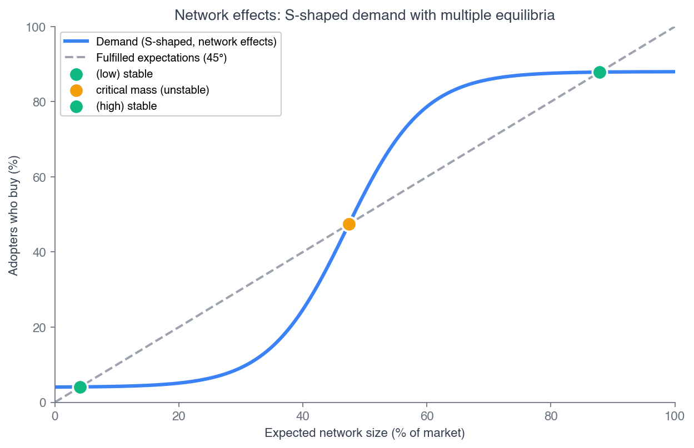
Fig 12.7 — network demand: a tipping point, then saturation.
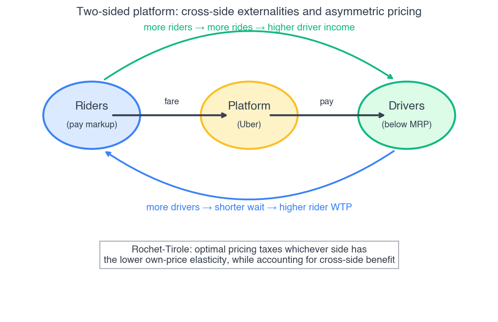
Fig 12.8 — two sides, cross-side externalities, one platform.
Rochet-Tirole-Weyl price structure. Each side's optimal price reflects (a) its own participation elasticity and (b) the externality its participation creates for the other side. Subsidize the side with the stronger positive cross-side externality.
A \$1 cut on the rider side that attracts 10 riders, each worth \$2 to drivers, loses \$10 in direct revenue but adds \$20 in cross-side value — a net \$10 gain. Keep cutting until marginal direct loss equals marginal cross-side gain.
Uber: From Acquisition to Extraction
Early Uber subsidized riders hard (VC-funded low fares) to grow the base, which attracted drivers, which attracted more riders. Once the rider base scaled, the cross-side externality flattened and Uber rebalanced toward extraction.
\$193B
FY2025 gross bookings
26.9%
Blended take rate (was 15–20%)
Uber One (\$9.99/mo) is a two-part-tariff overlay on the platform — \$0 delivery fees, ride cash-back — tightening as Uber shifts from growth to extraction.
Heads Up 12.4 — structure, not level
Subsidizing one side isn't irrational — with cross-side externalities the optimum has unequal prices. Watch the cross-side externality, not the price level on either side.
Credit cards reward cardholders, charge merchants 2–3%. Spotify pays artists ~70%, charges listeners \$11.99. Twitter/X: free to readers, charges advertisers. Same pattern every time.
§12.8 — A Note on Arthur Cecil Pigou (1877–1959)
Pigou was Alfred Marshall's chosen successor at Cambridge, holding the Professor of Political Economy chair from 1908 to 1943. His 1920 The Economics of Welfare did three lasting things: it built the welfare-economics framework for asking when intervention raises social welfare; it introduced the externality; and it classified price discrimination into the first / second / third-degree taxonomy this whole chapter is built on.
That taxonomy is also the bridge to Chapter 17. The Pigouvian tax — a per-unit tax equal to the marginal external cost — internalizes negative externalities and restores efficiency. One economist shapes two parts of this book.
Pigou's three legacies
1. Welfare economics — when does intervention help?
2. The externality — and the Pigouvian tax (Ch 17)
3. The PD taxonomy — this chapter's spine
Chapter Summary
Pigou's taxonomy
First (know each buyer), second (know the distribution), third (observe a group label). Each needs less, extracts less.
Perfect PD
\(Q_{PD} = Q_C\), \(CS = 0\), \(DWL = 0\). Efficient and fully extractive. \(\pi_{PD} = TS_C\).
Third-degree ★
\(L_i = -1/\varepsilon_{D,i}\) per segment. More elastic → lower price. The Ch 11 rule, \(K\) times.
Two-part tariff
Homogeneous: \(p^{\ast} = MC\), \(F^{\ast} = CS(MC)\). Replicates perfect PD. Heterogeneous: exclusion can win.
Bundling
Pure bundling beats separate sale iff \(\text{Cov}(v^X, v^Y) < 0\) (Adams-Yellen). Mixed beats pure.
Two-sided platforms
Price structure reflects own elasticity + cross-side externality. Subsidize the strong-externality side.
Why five prices? Because one price leaves surplus uncaptured. Each tool here converts consumer surplus into producer surplus — the DWL usually falls, the distribution is ambiguous. Next: Chapter 13 puts the rivals back in — Spotify vs Apple, Amazon, YouTube Music — and the Spotify thread becomes a four-firm constellation.
Chapter 12 — complete
Questions?
Next: Chapter 13 — Monopolistic Competition & Oligopoly. The rivals return.